Gilles Dupré - photos de maquettes¶
Je ne connais pas toute l’histoire. Il fut une époque où l’imagerie 3D n’existait pas et toute soumission à un concours était accompagnée d’une maquette. Elles finissaient, je crois, dans les caves du maître d’oeuvre qui avait commandé le projet - l’Etat dans la plupart des projets de mon père. Mon père s’est battu pour récupérer ce qu’il considérait être des oeuvres à part entière qui méritaient plus qu’un long séjour dans les caves d’un bâtiment qui ne deviendrait jamais un musée. Certaines ont vécu depuis un sort peu enviable, ballotées d’une cave à l’autre, peu aidées par leur taille pour passer des portes réticentes. Il reste les petites, épurées jusqu’à l’os, jusqu’à l’idée.
Ma préférée reste la maquette de Chanzy. Il me semble qu’elle a même gagné un prix mais je ne sais plus lequel. Papa avait cassé la monotonie des murs blancs en peignant des grands bandes noires en form de zigzag. Les grandes vitres faisaient le bonheur des rêveurs qui pouvaient voir tout ce qui se passait dans la cour, en particulier les concours de lancers de poids.
Quelques photos.
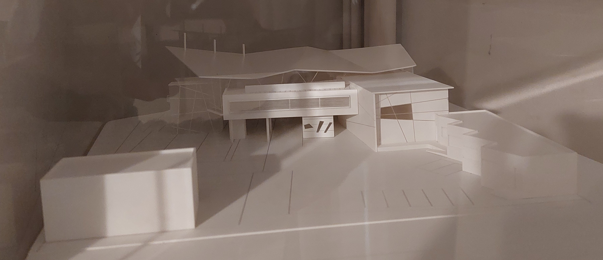 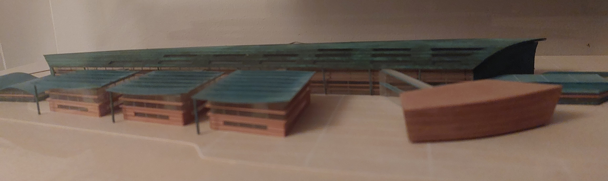 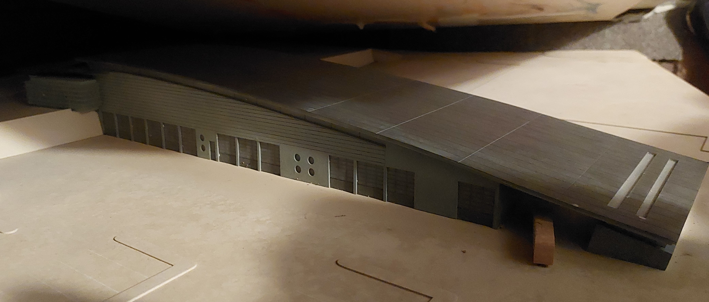 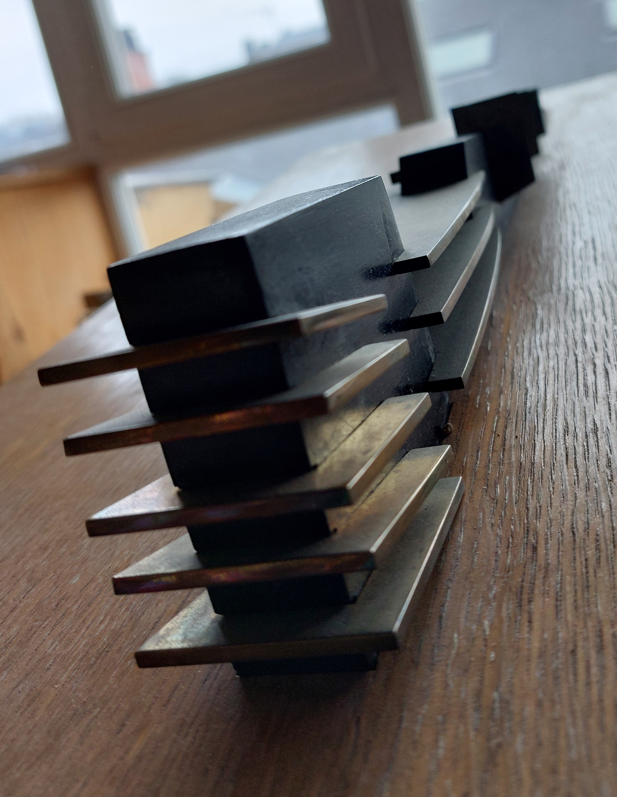 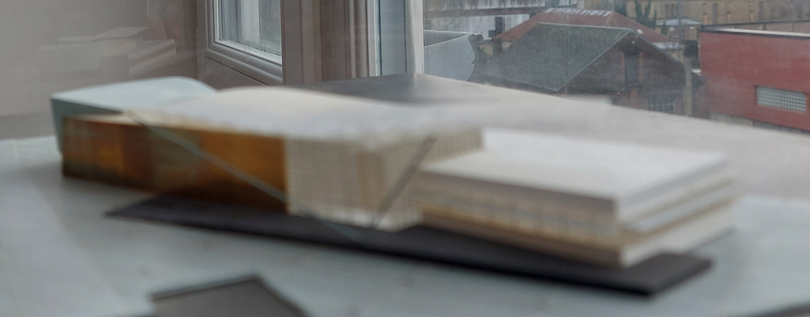 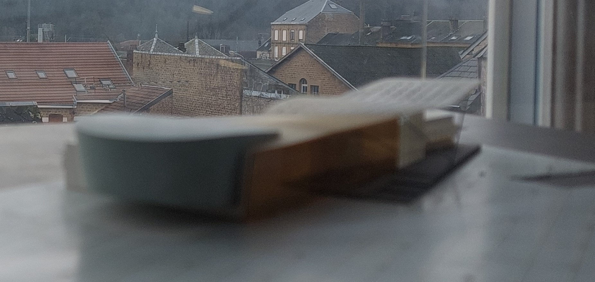 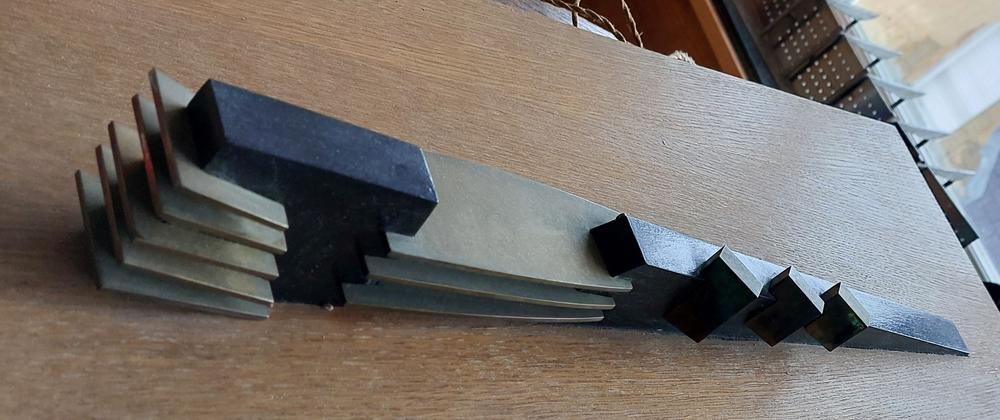 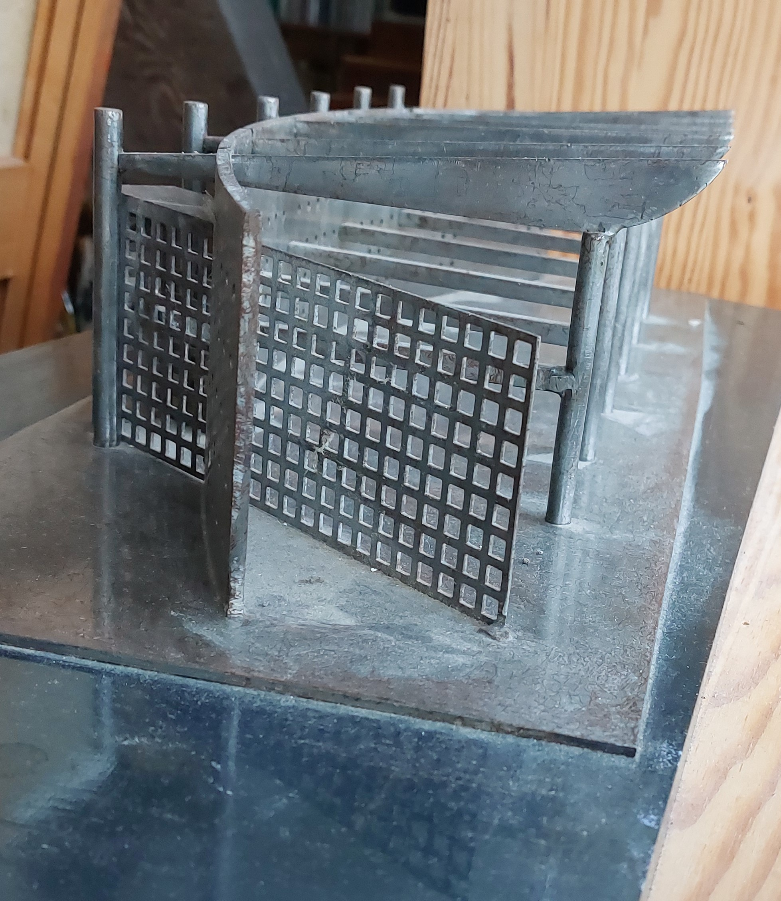 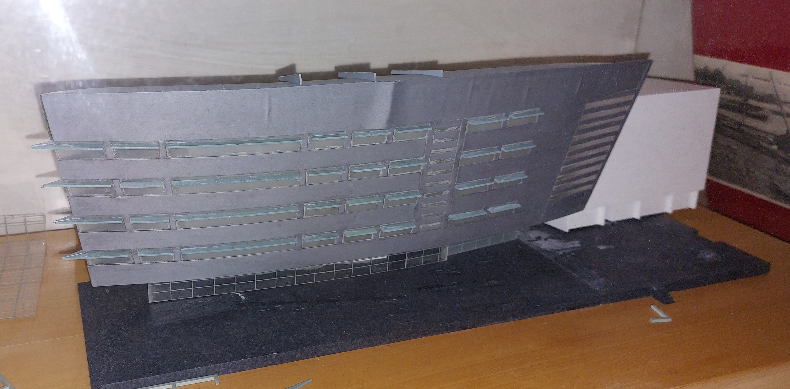 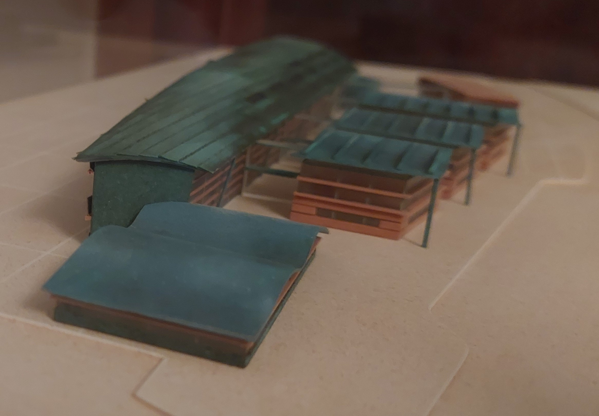 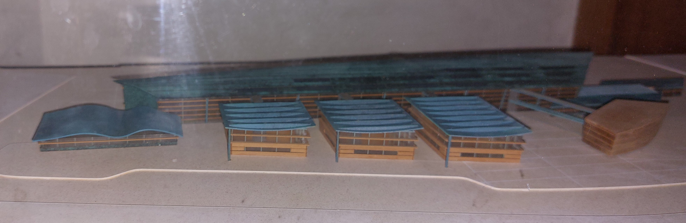 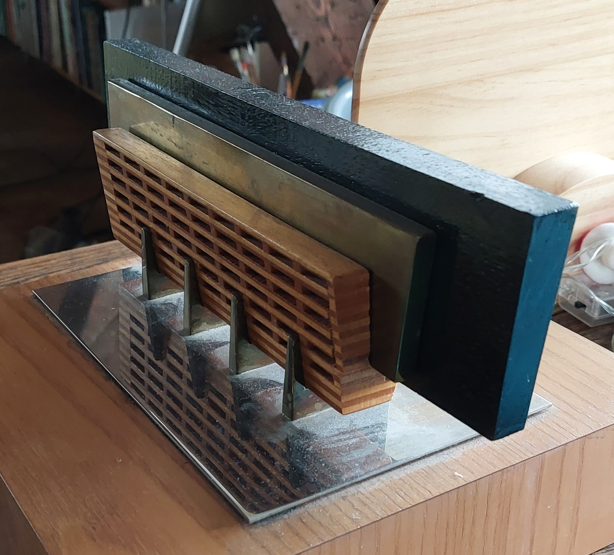